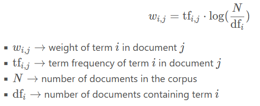
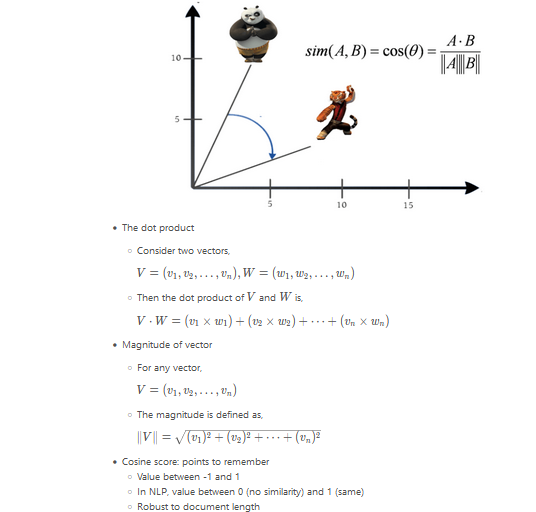

Code
import pandas as pd
import numpy as np
import matplotlib.pyplot as plt
import spacy
plt.rcParams['figure.figsize'] = (8, 8)kakamana
March 30, 2023
The cosine similarity score and TF-IDF weights will be computed between two vectors in this course. Using these concepts, you will create a movie recommendation system and a TED Talk recommendation system. In addition, you will learn about word embeddings and use word vector representations to compute similarities between various Pink Floyd songs.
This TF-IDF and similarity scores is part of Datacamp course: Introduction to Natural Language Processing in Python This course teaches techniques for extracting useful information from text and converting it into a format suitable for ML models. You will learn about POS tagging, named entity recognition, readability scores, n-gram and tf-idf models, and how to implement them using scikit-learn and spaCy. Additionally, you will learn how to calculate the similarity between two documents. During this process, you will be able to predict the sentiment of movie reviews and build recommenders for movies and Ted Talks. In the course of this course, you will learn how to engineer critical features from any text and solve some of the most challenging problems in data science.
This is my learning experience of data science through DataCamp. These repository contributions are part of my learning journey through my graduate program masters of applied data sciences (MADS) at University Of Michigan, DeepLearning.AI, Coursera & DataCamp. You can find my similar articles & more stories at my medium & LinkedIn profile. I am available at kaggle & github blogs & github repos. Thank you for your motivation, support & valuable feedback.
These include projects, coursework & notebook which I learned through my data science journey. They are created for reproducible & future reference purpose only. All source code, slides or screenshot are intellactual property of respective content authors. If you find these contents beneficial, kindly consider learning subscription from DeepLearning.AI Subscription, Coursera, DataCamp
n-gram modeling
Weight of dimension dependent on the frequency of the word corresponding to the dimension
Applications
Automatically detect stopwords
Search
Recommender systems
Better performance in predictive modeling for some cases
Term frequency-inverse document frequency
Proportional to term frequency
Inverse function of the number of documents in which it occurs
Mathematical formula
In this exercise, you have been given a corpus ted which contains the transcripts of 500 TED Talks. Your task is to generate the tf-idf vectors for these talks.
| transcript | url | |
|---|---|---|
| 0 | We're going to talk — my — a new lecture, just... | https://www.ted.com/talks/al_seckel_says_our_b... |
| 1 | This is a representation of your brain, and yo... | https://www.ted.com/talks/aaron_o_connell_maki... |
| 2 | It's a great honor today to share with you The... | https://www.ted.com/talks/carter_emmart_demos_... |
| 3 | My passions are music, technology and making t... | https://www.ted.com/talks/jared_ficklin_new_wa... |
| 4 | It used to be that if you wanted to get a comp... | https://www.ted.com/talks/jeremy_howard_the_wo... |
(510, 29168)print("\nYou now know how to generate tf-idf vectors for a given corpus of text. You can use these vectors to perform predictive modeling just like we did with CountVectorizer. In the next few lessons, we will see another extremely useful application of the vectorized form of documents: generating recommendations.")
You now know how to generate tf-idf vectors for a given corpus of text. You can use these vectors to perform predictive modeling just like we did with CountVectorizer. In the next few lessons, we will see another extremely useful application of the vectorized form of documents: generating recommendations.
In this exercise, we will learn to compute the dot product between two vectors, A = (1, 3) and B = (-2, 2), using the numpy library. More specifically, we will use the np.dot() function to compute the dot product of two numpy arrays.
In this exercise, you have been given a corpus, which is a list containing five sentences. You have to compute the cosine similarity matrix which contains the pairwise cosine similarity score for every pair of sentences (vectorized using tf-idf).
Remember, the value corresponding to the ith row and jth column of a similarity matrix denotes the similarity score for the ith and jth vector.
from sklearn.metrics.pairwise import cosine_similarity
# Initialize an instance of tf-idf Vectorizer
tfidf_vectorizer = TfidfVectorizer()
# Generate the tf-idf vectors for the corpus
tfidf_matrix = tfidf_vectorizer.fit_transform(corpus)
# compute and print the cosine similarity matrix
cosine_sim = cosine_similarity(tfidf_matrix, tfidf_matrix)
print(cosine_sim)[[1. 0.36413198 0.18314713 0.18435251 0.16336438]
[0.36413198 1. 0.15054075 0.21704584 0.11203887]
[0.18314713 0.15054075 1. 0.21318602 0.07763512]
[0.18435251 0.21704584 0.21318602 1. 0.12960089]
[0.16336438 0.11203887 0.07763512 0.12960089 1. ]]print("\nAs you will see in a subsequent lesson, computing the cosine similarity matrix lies at the heart of many practical systems such as recommenders. From our similarity matrix, we see that the first and the second sentence are the most similar. Also the fifth sentence has, on average, the lowest pairwise cosine scores. This is intuitive as it contains entities that are not present in the other sentences.")
As you will see in a subsequent lesson, computing the cosine similarity matrix lies at the heart of many practical systems such as recommenders. From our similarity matrix, we see that the first and the second sentence are the most similar. Also the fifth sentence has, on average, the lowest pairwise cosine scores. This is intuitive as it contains entities that are not present in the other sentences.Steps
Text preprocessing
Generate tf-idf vectors
Generate cosine-similarity matrix
The recommender function
Take a movie title, cosine similarity matrix and indices series as arguments
Extract pairwise cosine similarity scores for the movie
Sort the scores in descending order
Output titles corresponding to the highest scores
Ignore the highest similarity score (of 1)In this exercise, you have been given tfidf_matrix which contains the tf-idf vectors of a thousand documents. Your task is to generate the cosine similarity matrix for these vectors first using cosine_similarity and then, using linear_kernel.
We will then compare the computation times for both functions.
[[1. 0.36413198 0.18314713 0.18435251 0.16336438]
[0.36413198 1. 0.15054075 0.21704584 0.11203887]
[0.18314713 0.15054075 1. 0.21318602 0.07763512]
[0.18435251 0.21704584 0.21318602 1. 0.12960089]
[0.16336438 0.11203887 0.07763512 0.12960089 1. ]]
Time taken: 0.0009968280792236328 secondsfrom sklearn.metrics.pairwise import linear_kernel
# Record start time
start = time.time()
# Compute cosine similarity matrix
cosine_sim = linear_kernel(tfidf_matrix, tfidf_matrix)
# Print cosine similarity matrix
print(cosine_sim)
# Print time taken
print("Time taken: %s seconds" % (time.time() - start))[[1. 0.36413198 0.18314713 0.18435251 0.16336438]
[0.36413198 1. 0.15054075 0.21704584 0.11203887]
[0.18314713 0.15054075 1. 0.21318602 0.07763512]
[0.18435251 0.21704584 0.21318602 1. 0.12960089]
[0.16336438 0.11203887 0.07763512 0.12960089 1. ]]
Time taken: 0.0009999275207519531 secondsprint("\nNotice how both linear_kernel and cosine_similarity produced the same result. However, linear_kernel took a smaller amount of time to execute. When you're working with a very large amount of data and your vectors are in the tf-idf representation, it is good practice to default to linear_kernel to improve performance. (NOTE: In case, you see linear_kernel taking more time, it's because the dataset we're dealing with is extremely small and Python's time module is incapable of capture such minute time differences accurately)")
Notice how both linear_kernel and cosine_similarity produced the same result. However, linear_kernel took a smaller amount of time to execute. When you're working with a very large amount of data and your vectors are in the tf-idf representation, it is good practice to default to linear_kernel to improve performance. (NOTE: In case, you see linear_kernel taking more time, it's because the dataset we're dealing with is extremely small and Python's time module is incapable of capture such minute time differences accurately)In this exercise, we will build a recommender function get_recommendations(), as discussed in the lesson. As we know, it takes in a title, a cosine similarity matrix, and a movie title and index mapping as arguments and outputs a list of 10 titles most similar to the original title (excluding the title itself).
| Unnamed: 0 | id | title | overview | tagline | |
|---|---|---|---|---|---|
| 0 | 0 | 49026.0 | The Dark Knight Rises | Following the death of District Attorney Harve... | The Legend Ends |
| 1 | 1 | 414.0 | Batman Forever | The Dark Knight of Gotham City confronts a das... | Courage now, truth always... |
| 2 | 2 | 268.0 | Batman | The Dark Knight of Gotham City begins his war ... | Have you ever danced with the devil in the pal... |
| 3 | 3 | 364.0 | Batman Returns | Having defeated the Joker, Batman now faces th... | The Bat, the Cat, the Penguin. |
| 4 | 4 | 415.0 | Batman & Robin | Along with crime-fighting partner Robin and ne... | Strength. Courage. Honor. And loyalty. |
indices = pd.Series(metadata.index, index=metadata['title']).drop_duplicates()
def get_recommendations(title, cosine_sim, indices):
# Get the index of the movie that matches the title
idx = indices[title]
# Get the pairwsie similarity scores
sim_scores = list(enumerate(cosine_sim[idx]))
# Sort the movies based on the similarity scores
sim_scores = sorted(sim_scores, key=lambda x: x[1], reverse=True)
# Get the scores for 10 most similar movies
sim_scores = sim_scores[1:11]
# Get the movie indices
movie_indices = [i[0] for i in sim_scores]
# Return the top 10 most similar movies
return metadata['title'].iloc[movie_indices]In this exercise, we will build a recommendation engine that suggests movies based on similarity of plot lines. You have been given a get_recommendations() function that takes in the title of a movie, a similarity matrix and an indices series as its arguments and outputs a list of most similar movies.
You have also been given a movie_plots Series that contains the plot lines of several movies. Your task is to generate a cosine similarity matrix for the tf-idf vectors of these plots.
Consequently, we will check the potency of our engine by generating recommendations for one of my favorite movies, The Dark Knight Rises.
tfidf = TfidfVectorizer(stop_words='english')
# Construct the TF-IDF matrix
tfidf_matrix = tfidf.fit_transform(movie_plots)
# Generate the cosine similarity matrix
cosine_sim = linear_kernel(tfidf_matrix, tfidf_matrix)
# Generate recommendations
print(get_recommendations("The Dark Knight Rises", cosine_sim, indices))1 Batman Forever
2 Batman
8 Batman: Under the Red Hood
3 Batman Returns
9 Batman: Year One
10 Batman: The Dark Knight Returns, Part 1
11 Batman: The Dark Knight Returns, Part 2
5 Batman: Mask of the Phantasm
7 Batman Begins
4 Batman & Robin
Name: title, dtype: objectprint("\nYou've just built your very first recommendation system. Notice how the recommender correctly identifies 'The Dark Knight Rises' as a Batman movie and recommends other Batman movies as a result. This sytem is, of course, very primitive and there are a host of ways in which it could be improved. One method would be to look at the cast, crew and genre in addition to the plot to generate recommendations")
You've just built your very first recommendation system. Notice how the recommender correctly identifies 'The Dark Knight Rises' as a Batman movie and recommends other Batman movies as a result. This sytem is, of course, very primitive and there are a host of ways in which it could be improved. One method would be to look at the cast, crew and genre in addition to the plot to generate recommendationsn this exercise, we will build a recommendation system that suggests TED Talks based on their transcripts. You have been given a get_recommendations() function that takes in the title of a talk, a similarity matrix and an indices series as its arguments, and outputs a list of most similar talks.
You have also been given a transcripts series that contains the transcripts of around 500 TED talks. Your task is to generate a cosine similarity matrix for the tf-idf vectors of the talk transcripts.
Consequently, we will generate recommendations for a talk titled ‘5 ways to kill your dreams’ by Brazilian entrepreneur Bel Pesce.
| Unnamed: 0.1 | title | url | transcript | |
|---|---|---|---|---|
| Unnamed: 0 | ||||
| 0 | 1407.0 | 10 top time-saving tech tips | https://www.ted.com/talks/david_pogue_10_top_t... | I've noticed something interesting about socie... |
| 1 | 1524.0 | Who am I? Think again | https://www.ted.com/talks/hetain_patel_who_am_... | Hetain Patel: (In Chinese)Yuyu Rau: Hi, I'm He... |
| 2 | 2393.0 | "Awoo" | https://www.ted.com/talks/sofi_tukker_awoo\n | (Music)Sophie Hawley-Weld: OK, you don't have ... |
| 3 | 2313.0 | What I learned from 2,000 obituaries | https://www.ted.com/talks/lux_narayan_what_i_l... | Joseph Keller used to jog around the Stanford ... |
| 4 | 1633.0 | Why giving away our wealth has been the most s... | https://www.ted.com/talks/bill_and_melinda_gat... | Chris Anderson: So, this is an interview with ... |
def get_recommendations(title, cosine_sim, indices):
# Get the index of the movie that matches the title
idx = indices[title]
# Get the pairwsie similarity scores
sim_scores = list(enumerate(cosine_sim[idx]))
# Sort the movies based on the similarity scores
sim_scores = sorted(sim_scores, key=lambda x: x[1], reverse=True)
# Get the scores for 10 most similar movies
sim_scores = sim_scores[1:11]
# Get the movie indices
talk_indices = [i[0] for i in sim_scores]
# Return the top 10 most similar movies
return ted['title'].iloc[talk_indices]tfidf = TfidfVectorizer(stop_words='english')
# Construct the TF-IDF matrix
tfidf_matrix = tfidf.fit_transform(transcripts)
# Generate the cosine similarity matrix
cosine_sim = linear_kernel(tfidf_matrix, tfidf_matrix)
# Generate recommendations
print(get_recommendations('5 ways to kill your dreams', cosine_sim, indices))ValueError: np.nan is an invalid document, expected byte or unicode string.Word embeddings
Mapping words into an n-dimensional vector space
Produced using deep learning and huge amounts of data
Discern how similar two words are to each other
Used to detect synonyms and antonyms
Captures complex relationships
Dependent on spacy model; independent of dataset you useCollecting en-core-web-lg==3.5.0
Downloading https://github.com/explosion/spacy-models/releases/download/en_core_web_lg-3.5.0/en_core_web_lg-3.5.0-py3-none-any.whl (587.7 MB)
Requirement already satisfied: spacy<3.6.0,>=3.5.0 in c:\users\dghr201\appdata\local\programs\python\python39\lib\site-packages (from en-core-web-lg==3.5.0) (3.5.1)
Requirement already satisfied: tqdm<5.0.0,>=4.38.0 in c:\users\dghr201\appdata\roaming\python\python39\site-packages (from spacy<3.6.0,>=3.5.0->en-core-web-lg==3.5.0) (4.64.1)
Requirement already satisfied: murmurhash<1.1.0,>=0.28.0 in c:\users\dghr201\appdata\local\programs\python\python39\lib\site-packages (from spacy<3.6.0,>=3.5.0->en-core-web-lg==3.5.0) (1.0.9)
Requirement already satisfied: packaging>=20.0 in c:\users\dghr201\appdata\local\programs\python\python39\lib\site-packages (from spacy<3.6.0,>=3.5.0->en-core-web-lg==3.5.0) (21.3)
Requirement already satisfied: catalogue<2.1.0,>=2.0.6 in c:\users\dghr201\appdata\local\programs\python\python39\lib\site-packages (from spacy<3.6.0,>=3.5.0->en-core-web-lg==3.5.0) (2.0.8)
Requirement already satisfied: wasabi<1.2.0,>=0.9.1 in c:\users\dghr201\appdata\local\programs\python\python39\lib\site-packages (from spacy<3.6.0,>=3.5.0->en-core-web-lg==3.5.0) (1.1.1)
Requirement already satisfied: cymem<2.1.0,>=2.0.2 in c:\users\dghr201\appdata\local\programs\python\python39\lib\site-packages (from spacy<3.6.0,>=3.5.0->en-core-web-lg==3.5.0) (2.0.7)
Requirement already satisfied: smart-open<7.0.0,>=5.2.1 in c:\users\dghr201\appdata\local\programs\python\python39\lib\site-packages (from spacy<3.6.0,>=3.5.0->en-core-web-lg==3.5.0) (6.3.0)
Requirement already satisfied: thinc<8.2.0,>=8.1.8 in c:\users\dghr201\appdata\local\programs\python\python39\lib\site-packages (from spacy<3.6.0,>=3.5.0->en-core-web-lg==3.5.0) (8.1.9)
Requirement already satisfied: spacy-loggers<2.0.0,>=1.0.0 in c:\users\dghr201\appdata\local\programs\python\python39\lib\site-packages (from spacy<3.6.0,>=3.5.0->en-core-web-lg==3.5.0) (1.0.4)
Requirement already satisfied: requests<3.0.0,>=2.13.0 in c:\users\dghr201\appdata\local\programs\python\python39\lib\site-packages (from spacy<3.6.0,>=3.5.0->en-core-web-lg==3.5.0) (2.28.1)
Requirement already satisfied: langcodes<4.0.0,>=3.2.0 in c:\users\dghr201\appdata\local\programs\python\python39\lib\site-packages (from spacy<3.6.0,>=3.5.0->en-core-web-lg==3.5.0) (3.3.0)
Requirement already satisfied: typer<0.8.0,>=0.3.0 in c:\users\dghr201\appdata\local\programs\python\python39\lib\site-packages (from spacy<3.6.0,>=3.5.0->en-core-web-lg==3.5.0) (0.7.0)
Requirement already satisfied: pydantic!=1.8,!=1.8.1,<1.11.0,>=1.7.4 in c:\users\dghr201\appdata\local\programs\python\python39\lib\site-packages (from spacy<3.6.0,>=3.5.0->en-core-web-lg==3.5.0) (1.10.7)
Requirement already satisfied: srsly<3.0.0,>=2.4.3 in c:\users\dghr201\appdata\local\programs\python\python39\lib\site-packages (from spacy<3.6.0,>=3.5.0->en-core-web-lg==3.5.0) (2.4.6)
Requirement already satisfied: spacy-legacy<3.1.0,>=3.0.11 in c:\users\dghr201\appdata\local\programs\python\python39\lib\site-packages (from spacy<3.6.0,>=3.5.0->en-core-web-lg==3.5.0) (3.0.12)
Requirement already satisfied: numpy>=1.15.0 in c:\users\dghr201\appdata\roaming\python\python39\site-packages (from spacy<3.6.0,>=3.5.0->en-core-web-lg==3.5.0) (1.23.2)
Requirement already satisfied: preshed<3.1.0,>=3.0.2 in c:\users\dghr201\appdata\local\programs\python\python39\lib\site-packages (from spacy<3.6.0,>=3.5.0->en-core-web-lg==3.5.0) (3.0.8)
Requirement already satisfied: pathy>=0.10.0 in c:\users\dghr201\appdata\local\programs\python\python39\lib\site-packages (from spacy<3.6.0,>=3.5.0->en-core-web-lg==3.5.0) (0.10.1)
Requirement already satisfied: jinja2 in c:\users\dghr201\appdata\local\programs\python\python39\lib\site-packages (from spacy<3.6.0,>=3.5.0->en-core-web-lg==3.5.0) (3.1.2)
Requirement already satisfied: setuptools in c:\users\dghr201\appdata\local\programs\python\python39\lib\site-packages (from spacy<3.6.0,>=3.5.0->en-core-web-lg==3.5.0) (57.4.0)
Requirement already satisfied: pyparsing!=3.0.5,>=2.0.2 in c:\users\dghr201\appdata\local\programs\python\python39\lib\site-packages (from packaging>=20.0->spacy<3.6.0,>=3.5.0->en-core-web-lg==3.5.0) (3.0.9)
Requirement already satisfied: typing-extensions>=4.2.0 in c:\users\dghr201\appdata\local\programs\python\python39\lib\site-packages (from pydantic!=1.8,!=1.8.1,<1.11.0,>=1.7.4->spacy<3.6.0,>=3.5.0->en-core-web-lg==3.5.0) (4.3.0)
Requirement already satisfied: charset-normalizer<3,>=2 in c:\users\dghr201\appdata\local\programs\python\python39\lib\site-packages (from requests<3.0.0,>=2.13.0->spacy<3.6.0,>=3.5.0->en-core-web-lg==3.5.0) (2.1.1)
Requirement already satisfied: certifi>=2017.4.17 in c:\users\dghr201\appdata\local\programs\python\python39\lib\site-packages (from requests<3.0.0,>=2.13.0->spacy<3.6.0,>=3.5.0->en-core-web-lg==3.5.0) (2022.6.15)
Requirement already satisfied: idna<4,>=2.5 in c:\users\dghr201\appdata\local\programs\python\python39\lib\site-packages (from requests<3.0.0,>=2.13.0->spacy<3.6.0,>=3.5.0->en-core-web-lg==3.5.0) (3.3)
Requirement already satisfied: urllib3<1.27,>=1.21.1 in c:\users\dghr201\appdata\local\programs\python\python39\lib\site-packages (from requests<3.0.0,>=2.13.0->spacy<3.6.0,>=3.5.0->en-core-web-lg==3.5.0) (1.26.12)
Requirement already satisfied: blis<0.8.0,>=0.7.8 in c:\users\dghr201\appdata\local\programs\python\python39\lib\site-packages (from thinc<8.2.0,>=8.1.8->spacy<3.6.0,>=3.5.0->en-core-web-lg==3.5.0) (0.7.9)
Requirement already satisfied: confection<1.0.0,>=0.0.1 in c:\users\dghr201\appdata\local\programs\python\python39\lib\site-packages (from thinc<8.2.0,>=8.1.8->spacy<3.6.0,>=3.5.0->en-core-web-lg==3.5.0) (0.0.4)
Requirement already satisfied: colorama in c:\users\dghr201\appdata\local\programs\python\python39\lib\site-packages (from tqdm<5.0.0,>=4.38.0->spacy<3.6.0,>=3.5.0->en-core-web-lg==3.5.0) (0.4.6)
Requirement already satisfied: click<9.0.0,>=7.1.1 in c:\users\dghr201\appdata\roaming\python\python39\site-packages (from typer<0.8.0,>=0.3.0->spacy<3.6.0,>=3.5.0->en-core-web-lg==3.5.0) (8.1.3)
Requirement already satisfied: MarkupSafe>=2.0 in c:\users\dghr201\appdata\local\programs\python\python39\lib\site-packages (from jinja2->spacy<3.6.0,>=3.5.0->en-core-web-lg==3.5.0) (2.1.1)
Installing collected packages: en-core-web-lg
Successfully installed en-core-web-lg-3.5.0
[+] Download and installation successful
You can now load the package via spacy.load('en_core_web_lg')2023-03-31 14:08:26.663141: W tensorflow/stream_executor/platform/default/dso_loader.cc:64] Could not load dynamic library 'cudart64_110.dll'; dlerror: cudart64_110.dll not found
2023-03-31 14:08:26.663196: I tensorflow/stream_executor/cuda/cudart_stub.cc:29] Ignore above cudart dlerror if you do not have a GPU set up on your machine.
2023-03-31 14:08:51.185043: W tensorflow/stream_executor/platform/default/dso_loader.cc:64] Could not load dynamic library 'nvcuda.dll'; dlerror: nvcuda.dll not found
2023-03-31 14:08:51.185081: W tensorflow/stream_executor/cuda/cuda_driver.cc:269] failed call to cuInit: UNKNOWN ERROR (303)
2023-03-31 14:08:51.317771: I tensorflow/stream_executor/cuda/cuda_diagnostics.cc:169] retrieving CUDA diagnostic information for host: DHR0201L
2023-03-31 14:08:51.318117: I tensorflow/stream_executor/cuda/cuda_diagnostics.cc:176] hostname: DHR0201L
WARNING: Ignoring invalid distribution -rotobuf (c:\users\dghr201\appdata\local\programs\python\python39\lib\site-packages)
WARNING: Ignoring invalid distribution -rotobuf (c:\users\dghr201\appdata\local\programs\python\python39\lib\site-packages)
WARNING: Ignoring invalid distribution -rotobuf (c:\users\dghr201\appdata\local\programs\python\python39\lib\site-packages)
WARNING: Ignoring invalid distribution -rotobuf (c:\users\dghr201\appdata\local\programs\python\python39\lib\site-packages)
WARNING: Ignoring invalid distribution -rotobuf (c:\users\dghr201\appdata\local\programs\python\python39\lib\site-packages)
WARNING: Ignoring invalid distribution -rotobuf (c:\users\dghr201\appdata\local\programs\python\python39\lib\site-packages)
WARNING: Ignoring invalid distribution -rotobuf (c:\users\dghr201\appdata\local\programs\python\python39\lib\site-packages)
WARNING: You are using pip version 21.2.3; however, version 23.0.1 is available.
You should consider upgrading via the 'C:\Users\dghr201\AppData\Local\Programs\Python\Python39\python.exe -m pip install --upgrade pip' command.I I 1.0
I like 0.3184410631656647
I apples 0.1975560337305069
I and -0.0979200005531311
I orange 0.06804359704256058
like I 0.3184410631656647
like like 1.0
like apples 0.29574331641197205
like and 0.24359610676765442
like orange 0.3216366171836853
apples I 0.1975560337305069
apples like 0.29574331641197205
apples apples 1.0
apples and 0.24472734332084656
apples orange 0.5736395120620728
and I -0.0979200005531311
and like 0.24359610676765442
and apples 0.24472734332084656
and and 1.0
and orange 0.2520448565483093
orange I 0.06804359704256058
orange like 0.3216366171836853
orange apples 0.5736395120620728
orange and 0.2520448565483093
orange orange 1.0In this final exercise, you have been given lyrics of three songs by the British band Pink Floyd, namely ‘High Hopes’, ‘Hey You’ and ‘Mother’. The lyrics to these songs are available as hopes, hey and mother respectively.
Your task is to compute the pairwise similarity between mother and hopes, and mother and hey.